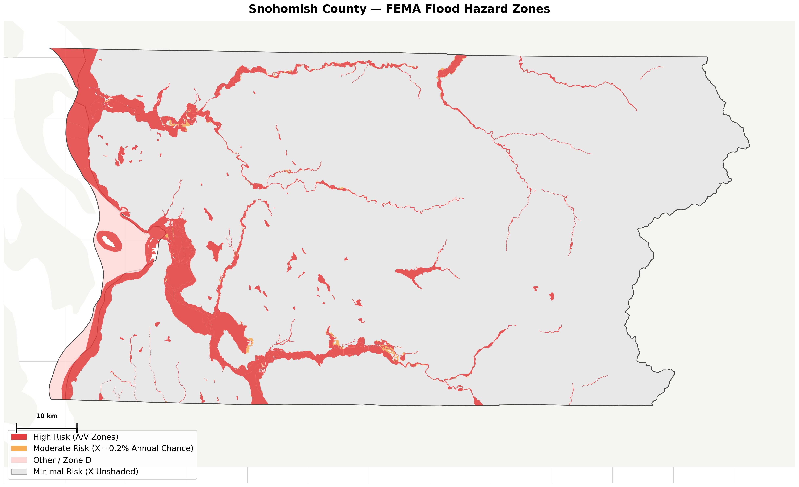
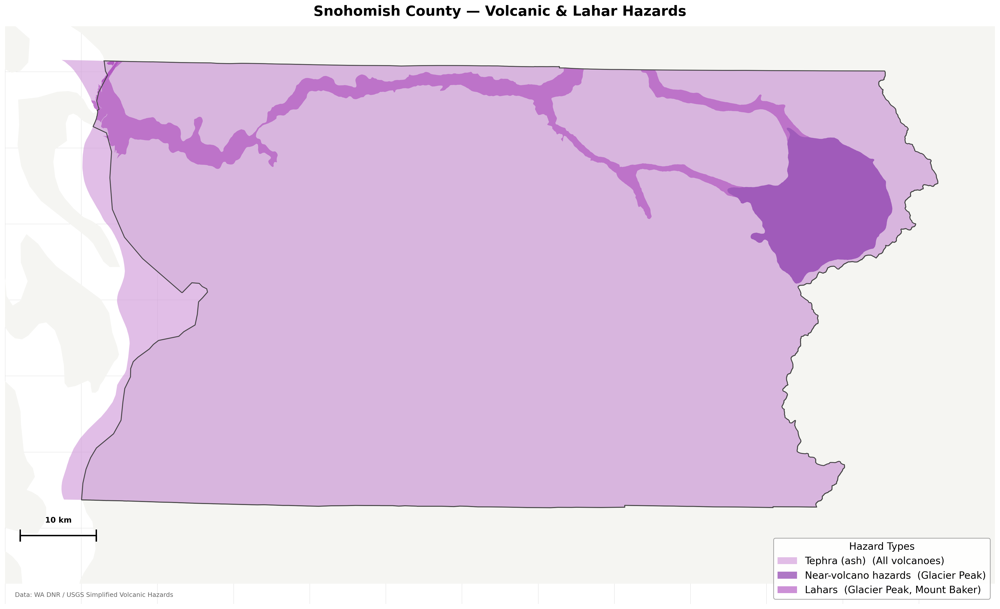
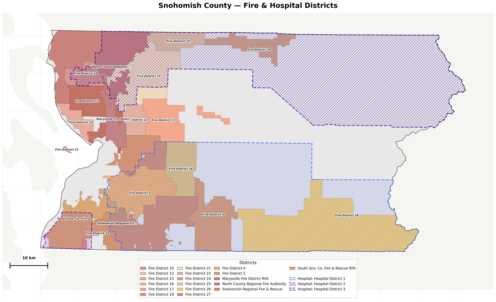
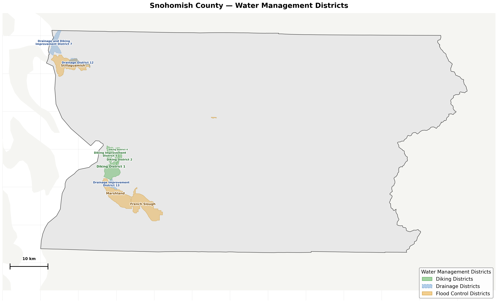
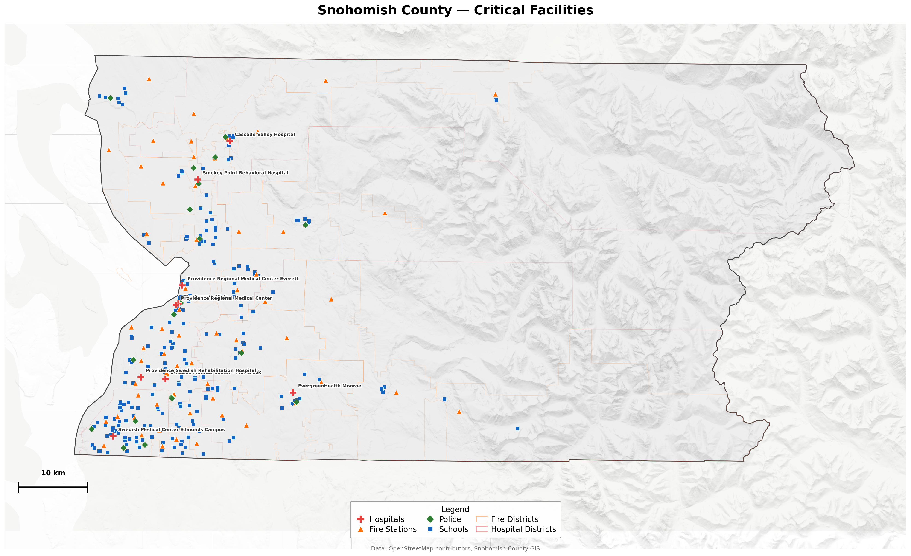
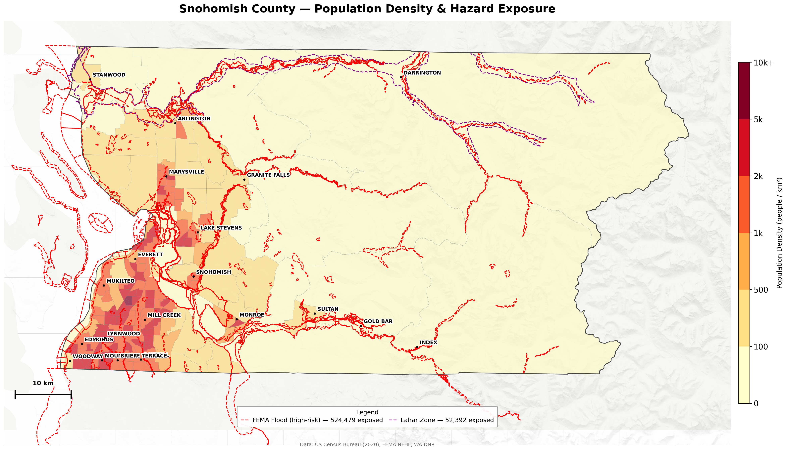
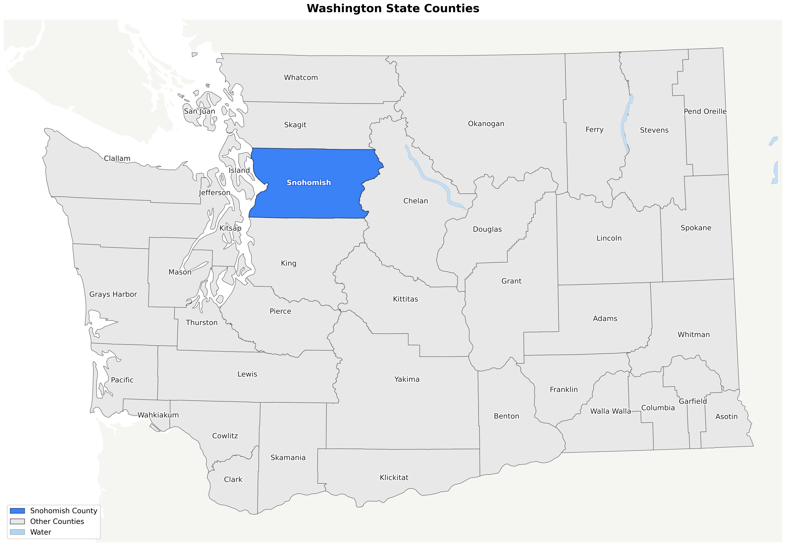

Combined Map
All hazard layers, roads, cities, public lands, and terrain in a single view.

Combined Hazard & Infrastructure
FEMA flood zones, Glacier Peak lahar paths, USGS hillshade terrain, WSDOT roads, 20 cities, National Forest, state parks, and water management district boundaries.
All LayersHazard Layers
Individual hazard maps isolated for focused analysis.

FEMA Flood Hazard Zones
3,348 flood zone polygons. Red = high risk (A/V zones), orange = moderate (0.2% annual chance).
Hazard
Volcanic & Lahar Hazards
Glacier Peak and Mt Baker lahar flow paths, near-volcano hazard zone, and tephra (ash fall) coverage.
Hazard
Fire & Hospital Districts
18 fire protection districts and 3 hospital districts with jurisdictional boundaries.
Districts
Water Management Districts
4 diking, 3 drainage, and 4 flood control district boundaries.
DistrictsOperational Maps
Planning maps for emergency management and search & rescue operations.

Critical Facilities
9 hospitals, 70 fire stations, 243 schools, 20 police stations. The eastern wilderness gap is starkly visible.
Operations
Terrain, Trails & SAR Access
4,636 hiking trails, 2,904 forest roads, and 9,568 waterways on prominent hillshade terrain.
Operations
Population Density & Exposure
Census block group density choropleth with FEMA flood and lahar zone boundaries overlaid. 524K flood-exposed, 52K lahar-exposed.
Operations
Evacuation Routes & Bottlenecks
Roads by capacity with 16 bottleneck segments highlighted. SR-530 to Darrington is the critical vulnerability.
Operations
River Systems & Water Access
19,705 waterways, 64 boat ramps, 13 labeled major rivers for swift water rescue planning.
Operations
Washington State Overview
All 39 Washington counties with Snohomish highlighted. Context map for regional orientation.
OverviewData Sources
- FEMA National Flood Hazard Layer Flood zones by risk classification — hazards.fema.gov
- WA Dept. of Natural Resources Volcanic hazards, lahar zones — gis.dnr.wa.gov
- Snohomish County GIS Districts, city boundaries, national forest — gis.snoco.org
- WSDOT State route centerlines and road classification — data.wsdot.wa.gov
- USGS National Map Hillshade terrain and National Hydrography Dataset — nationalmap.gov
- US Census Bureau County boundaries, block groups, population — census.gov
- OpenStreetMap Facilities, trails, boat ramps — overpass-api.de
- Natural Earth 10m coastline and lake polygons — naturalearthdata.com
git clone https://github.com/radiolabme/snohomish-em-maps.git
cd snohomish-em-maps
pip install geopandas matplotlib adjustText pillow
./generate.py all